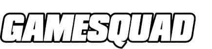
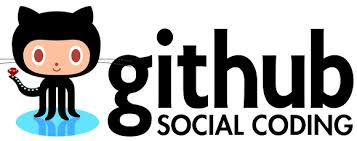
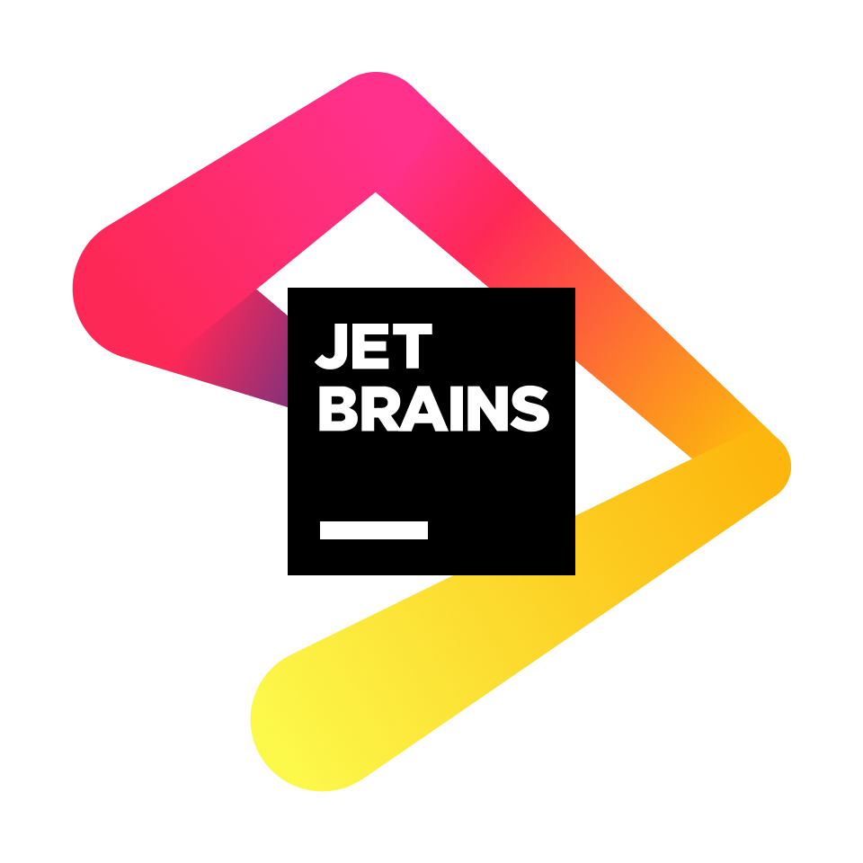

VASL Cooperative
Contribute to VASL!

VASL is not the result of a single person's effort, but has grown out of the cooperation of a large number of people over time. There are many niches, large and small, for anybody interested in contributing. The VASL Cooperative is a collection of people who contribute map artwork, counter artwork, scenario setups, web support, and/or Java programming. Or people just interested in an inside or advance view of what's happening with VASL.
Join the discussion list at
http://forums.gamesquad.com/forumdisplay.php?103-VASL.
You may find talents or obsessions you never knew you had!
Customize VASL!

VASSAL modules are highly customizable. This means
that it's possible for anybody to make enhancements to VASL. Got some third-party counters you'd like to contribute?
Now it's easy! By using VASSAL's module editor, you can create your own custom extensions, with whatever new
counters you like, then post it on the web site for others to enjoy!
For even more ambitious people, VASL source code is publicly available source code. Got a pet feature you'd like to add to VASL? Now you can write your own Java code and plug it straight in! Look at the 'docs' directory in the VASSAL download for documentation on the interface and a tutorial on how to do it. And of course, the VASL developers are more than willing to help you get comfortable. Find a problem or looking for ideas? Check the VASL Issues List.
Current Development of VASL!
VASL6.7.0
VASL6.7.0 beta versions will be released here in the coming months.
VASL6.7.0-beta6
Development for VASL6.7.0 is underway. Our Issues List on Github usually contains about 150 items, a combination of desired features, known bugs, and board related items. Not all are being worked on at any given time.
VASL6.7.0 will be a bug fix version.
In particular, there are a number of LOS bugs that needed to be addressed, along with finishing up the work on having all overlays work with LOS Checking, including those in the VASL Overlays Extension.
The original plan for 6.6.9 was to focus on two new features: reworking AFV popup menus and starting to use SVG images in counters - this work was not ready to be included in 6.6.9 and work on them will continue in 6.7.0. VASL-6.7.0-beta6 implements svg graphics for infantry counters and many information counters in addition to all gun and vehicle counters added in earlier betas. Have a look at the new look and provide comments.
See What's New in VASL Help for a full list of changes.

Game Converter Development Plan Overview
In order to preserve the “enduring nature” of the Game Converter process there will be an impact on future VASL development planning and scheduling. After 6.6.6, new VASL versions will only include changes that will not break Setup Files or Saved Games. New features that impact version compatibility will be added only once an enduring Converter is in place.
VASSAL’s development also has an impact on these issues. Changes in VASSAL may affect VASL’s ability to provide backwards compatibility. The current practice of having multiple VASL and/or VASSAL versions installed at one time provides some assurance to VASL users that older games will remain useable.
The plan was to target VASL 6.7.0 for implementing the Game Converter tool in such a way that setup files could be automatically updated in bulk to the next version. Between VASL versions 6.6.7 and 6.7.0, the Game Converter tool would be applied to setup files individually to check for errors. Saved games are best converted individually when they are opened. Players will have the option to update or not.
Revised Plan of Action
Spring 2025 Release VASL6.7.0
The 6.7.0 version of the Scenario Setup Files extension will be released in April along with 6.7.0.
The final version of the Game Converter will provide enhancements and modifications to all of the previous functionality.
It will support checking for and updating of extensions required for the .vsav and additional means to grab and display external content. This work is delayed to future versions.
VASL code development is currently carried out using free software tools provided by Jet Brains as part of it's Open Source Support . We appreciate their on-going assistance to VASL development.